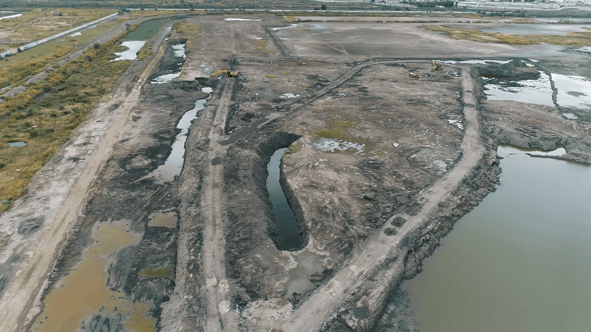
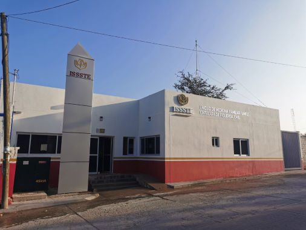
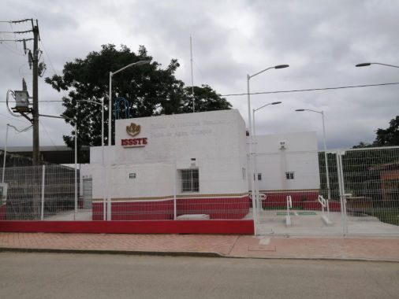
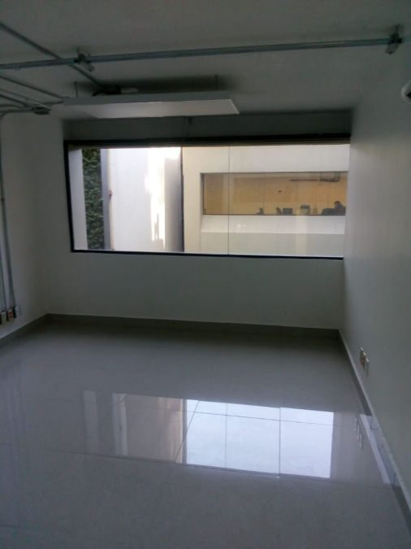
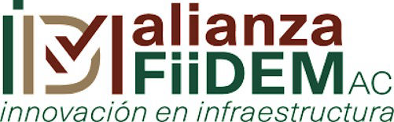
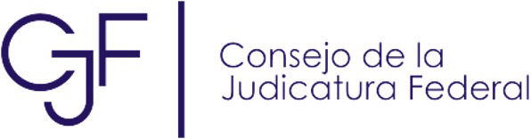
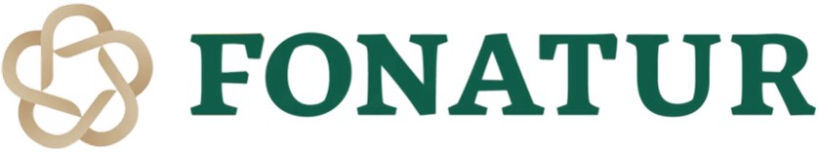
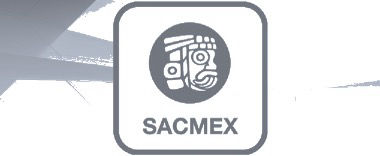
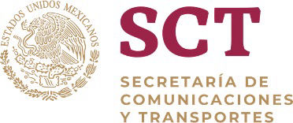
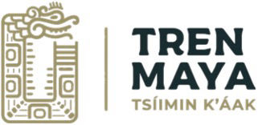

Liberación de Derecho de Vía
Identificación de asentamientos, levantamiento de predios, concertación social, avalúos, negociación e integración de expediente expropiatorio.
Ingeniería civil · Supervisión · Infraestructura
GAVIL Ingeniería S.A. de C.V. integra proyectos, estudios, supervisión, mantenimiento y control de calidad para infraestructura estratégica en México.
Desarrollo, construcción y mantenimiento de obras públicas y privadas.
Seguimiento técnico, administrativo, financiero y control de calidad.
Liberación de derecho de vía, avalúos, negociación y expedientes.
Topografía, factibilidad, impacto ambiental, hidráulica y planeación.
GAVIL Ingeniería S.A. de C.V. fue constituida el 15 de agosto de 2014 con el fin de realizar obras de infraestructura pública y privada, además de prestar servicios de supervisión y mantenimiento para la industria de la construcción.
Su trabajo se apoya en servicios de aseguramiento y control de calidad, así como en la participación de profesionales especializados para realizar estudios, proyectos y servicios de ingeniería.
Servicios
Identificación de asentamientos, levantamiento de predios, concertación social, avalúos, negociación e integración de expediente expropiatorio.
Canales, presas, estaciones de bombeo, redes de abastecimiento, sistemas de riego, drenaje, aguas residuales y mantenimiento de redes.
Desarrollo de infraestructura civil, energética, ferroviaria, minera y de comunicaciones con enfoque técnico y operativo.
Estudios topográficos, proyecto geométrico de carreteras, vialidades urbanas e infraestructura hidráulica.
Gerencia de proyecto, supervisión de infraestructura, control de materiales y pruebas de laboratorio.
Manifestaciones de impacto ambiental, planeación urbana, factibilidad económica, ordenación de cuencas y estudios de conservación.
Línea de tiempo
Supervisión técnica y administrativa para la construcción del Colector de la Fuerza Aérea Mexicana, en Venustiano Carranza.
Levantamiento topográfico y supervisión para recuperación de Presa Tequilasco, presas y túneles de interconexión en la Ciudad de México.
Proyecto topográfico y liberación de Derecho de Vía para sistema de transporte de gas natural en Bordo Poniente, Estado de México.
Trabajos técnicos y legales para regular predios del Derecho de Vía de la carretera Chihuahua–Parral.
Liberación de Derecho de Vía para la autopista de altas especificaciones Tuxpan–Tampico, tramo Tuxpan–Ozuluama, Veracruz.
Adecuación y obras complementarias del 5° nivel para oficinas del Poder Judicial de la Federación en Av. Revolución, CDMX.
Servicios integrales de logística relacionados con supervisión técnica y financiera para Sistemas Eléctricos Metropolitanos.
Elaboración de proyecto ejecutivo, suministro de materiales y construcción de plataforma y vía del Tren Maya, tramo Palenque–Escárcega.
Obra civil e instalaciones electromecánicas para ampliación, remodelación y remozamiento de unidades médicas en Cintalapa y Salto del Agua.
Seguimiento técnico y jurídico de escrituración y expropiación de predios para Derecho de Vía del Libramiento de Cuernavaca.
Portafolio

Sistema de transporte de gas natural y trabajos topográficos asociados.

Ampliación, remodelación e instalaciones electromecánicas.

Consultorio familiar, odontología, farmacia, sanitarios y áreas de servicio.

Adecuación y obras complementarias para funciones del Poder Judicial.
Clientes e instituciones






Método de trabajo
Revisión de alcance, ubicación, condiciones técnicas, documentación disponible y actores involucrados.
Estudios, levantamientos, factibilidad, criterios de diseño, ruta crítica y control documental.
Coordinación técnica, supervisión de obra, derecho de vía, control de calidad y seguimiento administrativo.
Entrega de evidencia, reportes, validaciones y continuidad operativa según el alcance contratado.
Contacto
La información de contacto corresponde a la publicada por GAVIL Ingeniería.